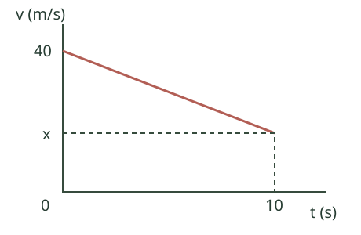
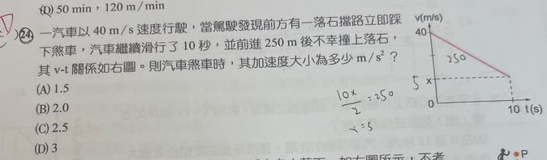

分享原卷｜第24題
完整原題

一汽車以40 m/s速度行駛，當駕駛發現前方有一落石擋路立即踩下煞車，汽車繼續滑行了10秒，並前進250 m後不幸撞上落石，其v-t關係如右圖。則汽車煞車時，其加速度大小為多少m/s²？
(A) 1.5
(B) 2.0
(C) 2.5
(D) 3
先想一想，再查看答案、解說與原圖
原卷作答：原作答有塗改，紅筆訂正D
正確答案：(D) 3 m/s²。
逐項解析
| 選項與原句 | 判讀 | 句意與判斷理由 |
|---|---|---|
| (A) 1.5 | 不選 | 未符合10秒內由40降到10 m/s的速度變化。 |
| (B) 2.0 | 不選 | 未符合10秒內速度減少30 m/s的條件。 |
| (C) 2.5 | 不選 | 不能用路程除以時間平方直接當作這段加速度。 |
| (D) 3 | 應選 | 由梯形面積得末速10 m/s，速度變化30 m/s歷時10秒，大小3 m/s²。 |
詳細說明與解題步驟
速度—時間圖是向下傾斜的直線，表示煞車期間為等加速度運動；圖線與時間軸之間的面積就是這10秒前進的距離。注意題目說10秒後撞上落石，沒有說撞擊前已停車，不能直接把末速度設為0。
【先求撞擊前速度x】
梯形面積＝(40＋x)×10÷2＝250。
40＋x＝50，所以x＝10 m/s。
也可先用250÷10＝25 m/s求平均速度，再由(40＋x)÷2＝25得到x＝10。
【求加速度大小】
以原行車方向為正，加速度a＝(10－40)÷10＝－3 m/s²。負號表示加速度方向與原速度相反，因此這一段正在減速。題目問大小，答案為3 m/s²，選D。
檢核：初速40、末速10的平均速度為25 m/s，持續10秒恰前進250 m，與題目相符。
核對註記：已依原卷或完整文字核對並獨立解題；對應教材課次未確認，歸綜合。
原圖（僅本題）
